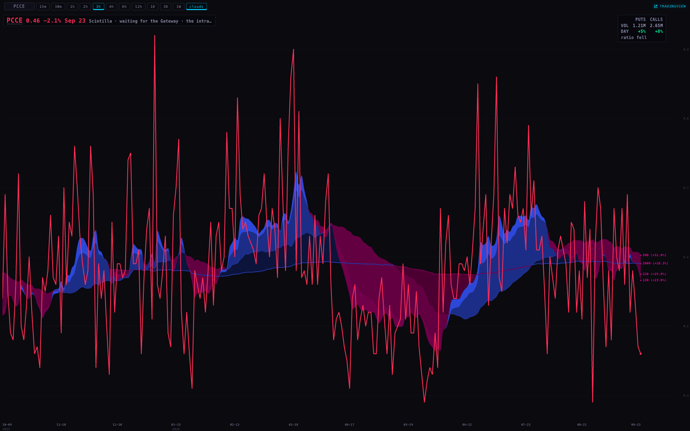
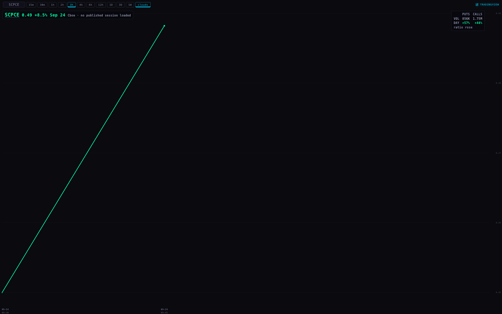
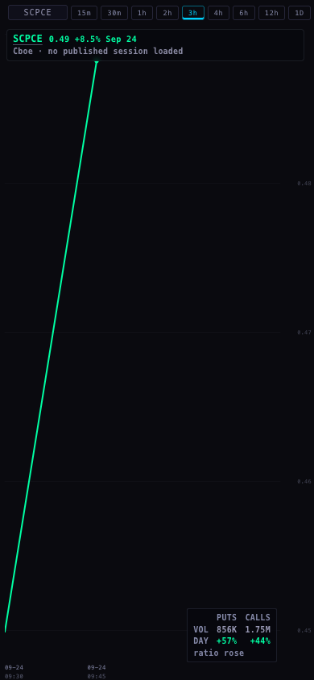
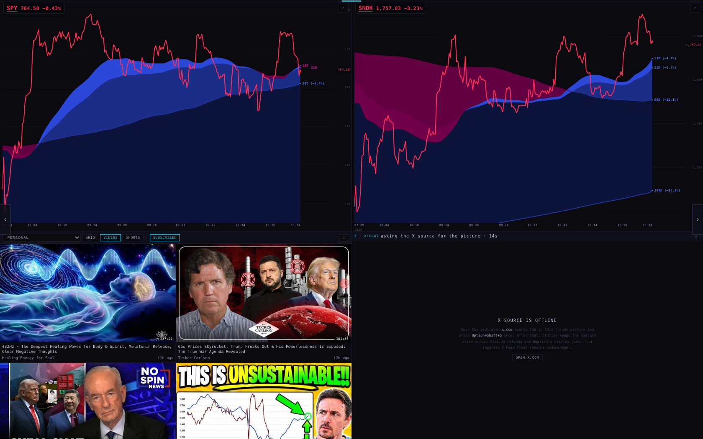

You said: “Interactive Brokers, we're good. You're connected. So let's use it. What are the gaps that we have? Because I still see things getting grey on Station.”
So I went and looked — at the real Station, in a browser, at desk width and at phone width, during the session and again with the clock outside market hours. I wrote down every spot that renders grey, dim, or says it is waiting. There are five. Then, for each one, I asked whether IBKR can fill it.
The short answer. Exactly one of the five grey spots is IBKR's to fill — the put/call pane — and it is now built: the readings your Gateway has been taking all morning are turned into a line, and the chart API serves it. Three of the other four are not market data at all (your X source, your YouTube account, and the charts the phone deliberately pauses). The fifth is an ETF look-through table that IBKR does not publish.
Nothing here is deployed. Everything below was built, tested and proven on this machine, and the coordinator ships it.
Measured on the live Station at 09:39–09:45 ET today, headless, at 1680px and 390px, and again with the page's clock moved to 02:10 ET so I could see it outside market hours. The same five appeared both times — no new grey appears when the market is shut.
| Where | What it says | Why | Can IBKR fill it? |
|---|---|---|---|
| Chart · put/call pane /chart?t=PCCE and ?t=SCPCE |
“Scintilla · waiting for the Gateway · the intraday series is not being served yet” | The readings were being taken — 23,566 of them today — but nothing turned them into minutes, and the chart API had no route to serve them. Asking it for SCPCE returned 404. | YES — built this unit |
| Deck · X pane | “X source is offline” | The x.com capture tab is not open in this Chrome profile. Nothing to do with market data. | No |
| Deck · personal video | “… · not connected yet” | Your YouTube account is not connected in this browser. | No |
| Deck on the phone | “paused to keep the page light — tap to bring it back” | Deliberate. The phone holds the charts until you ask. This is the page behaving, not failing. | Not a fault |
| Analytics | “RETURN unavailable — provider-native candles require one explicit symbol”, and “BLOCKED: NO DATA — etf_holdings holds 69 rows / etf_info 1 ticker (AGIX), stale 2026-07-22” | The first is by design: there is no whole-universe bar read, on purpose. The second is an ETF look-through table that was never filled. | No — IBKR publishes neither |
Two more things showed up grey and are correct: the small print on the wall
(1/72 · 1D, 20s) is a label, not a missing number; and /heat and
/cohorts came back with nothing grey at all.

Before. Cboe's line draws (red, down 2.1%, Sep 23). Beside it, in grey: “Scintilla · waiting for the Gateway · the intraday series is not being served yet.”
Same page, same code path, with the route built this unit answering — fed the minute rows that today's real readings produce:

After. SCPCE 0.49, up 8.5%, Sep 24 — and in the corner the two amounts that matter: PUTS 856K, up 57% · CALLS 1.75M, up 44% · ratio rose. The ratio went up because puts grew faster than calls — not because calls stopped. That is the sentence you asked the pane to be able to say.

The same line at 390px.

The deck today: charts and video fine, the X pane offline (not market data).
One honest note on these two pictures: the Cboe companion says “no published session loaded” because the copy of the chart API running on my machine cannot reach the stored Cboe file. On the real server it loads, exactly as in the “before” picture.
Every number on that pane is traceable back to a reading your own Gateway took. Nothing is estimated, and nothing is filled in.
your IB Gateway ──► option-volume.py ──► ibkr-ingest ──► ibkr_option_volume (the day's running call and put volume, per name, every 32 seconds) 23,566 rows today ibkr_option_volume ──► putcall-aggregate (every minute) ──► ibkr_putcall_minute sums the names, divides once, records how many it actually had ibkr_putcall_minute ──► chart API /candles?symbol=SCPCE ──► the Station pane
Every minute of the session it reads the readings already stored, and writes one row per line per minute: your two headline lines, each of your 119 cohorts, and each of the 11 sectors. After the close it writes the day's closing value, the index-versus-single-names gap, and the comparison against Cboe's print.
putcall.mjs) instead of
restating it in SQL, so there is one definition of the ratio, not two that can drift apart.The chart API now answers SCPCE and SCPCI, plus any cohort or sector line —
SCPC.SECTOR.Technology, SCPC.COHORT.AI_HARDWARE — in the same shape as the Cboe
series, so the pane draws it with the code it already has.
When the route first served, the line drew grey while its own readout said +8.5% in green. The chart colours a line by the previous day's close, and a brand-new intraday line has no previous day. Its own opening reading is a real baseline, so the line now says up or down since the open — green or red, never grey.
IBKR lets you watch only so many things at once. Here is what is actually happening, measured from today's rows rather than assumed:
| Measured today | |
|---|---|
| Names swept | 364 of 364 — none missing |
| Lines held at once | 90 (the reader's batch size) |
| One full sweep of the universe | 32 seconds (median gap between two readings of the same name; 90% of the time it is under 33 seconds) |
| Readings per name | 62–67 in the first 35 minutes |
| Readings stored | 23,566 for the session so far |
IBKR's documented allowance is 100 simultaneous lines, and the reader is using 90 of them. That leaves about ten — enough, in principle, for ES, NQ, RTY, CL, GC, VIX and DXY at one line each, with three to spare.
Two things to know before spending those ten lines.
First, the limit is per account, not per program. A second reader on a different client id draws from the same hundred. If quotes are added, the put/call reader's batch must come down from 90 to keep the total under the limit — which makes the sweep slower, and the lines slightly older.
Second, the real limit on your account has not been measured. 100 is IBKR's
documented default; accounts with quote boosters have more. The reader already has a mode that finds out
(option-volume.py --measure-lines). I did not run it: it would have taken lines away from the
live sweep during a session. Run it when the market is shut, and the split stops being an estimate.
None of ES/NQ/RTY/CL/GC/VIX/DXY is a grey spot on Station today — no pane asks for them. Adding them would be new surface rather than a repair, so I have priced it and not built it.
Built 24 Sep 2026 · backend m67/ibkr-use-20260924 ·
chart API m67/putcall-route-20260924 · Station m67/station-grey-20260924 ·
49 offline tests added, all passing · nothing deployed